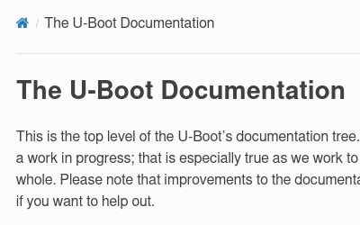
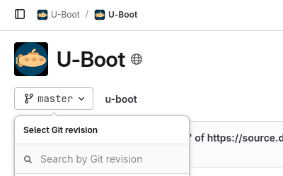
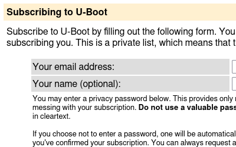
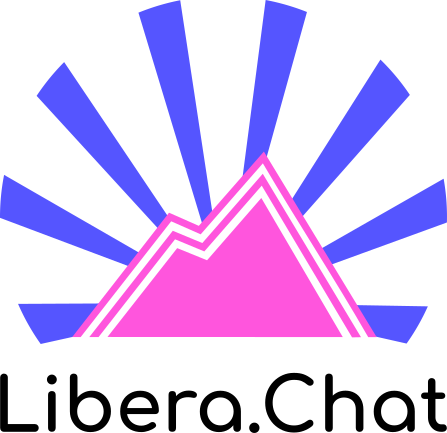

Development/Usage resources
Multiple resources to aid development and usage of U-Boot are available.

Documentation
The complete up-to-date documentation is available at docs.u-boot.org.
This includes user-oriented documentation for users that want to get U-Boot running on their system, and developer-oriented documentation for those who want to contribute.
Improvements to the documentation are welcome, reach out to us if you want to help out!

Source code
U-Boot's source code is licensed under the GNU General Public License v2 or-later, and it is freely available for anyone to dive in.
There are also multiple Custodian trees for specific SoC support or feature support in U-Boot. You can also browse the complete source code tree using the Elixir Cross Referencer
Get involved
There are different ways to get involved in the U-Boot community, as described below.

Mailing lists
To post to the mailing list, send your email messages to
You may also consider subscribing. U-Boot custodian trees also have their own mailing list.

Chat with us
Join us in the #u-boot channel on the Libera.Chat IRC network. You can join using the Libera.Chat web client (alt) or your favourite IRC client.
Archived logs of this channel are also available, which can be used to catch up on what happened in the channel while offline, or for searching in the various discussions that happen there.